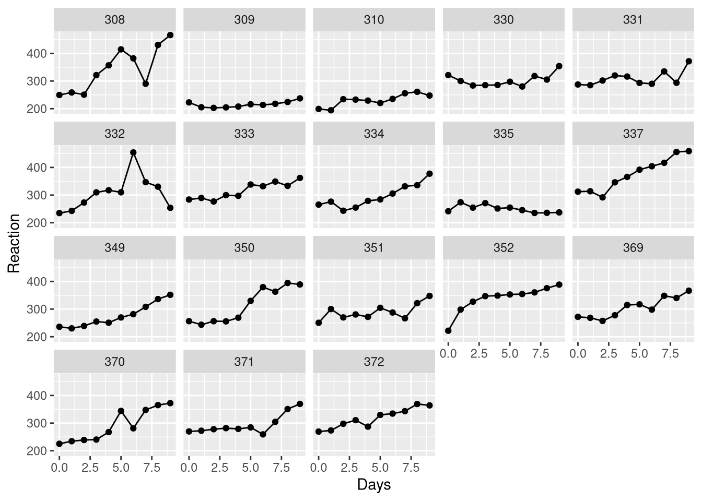
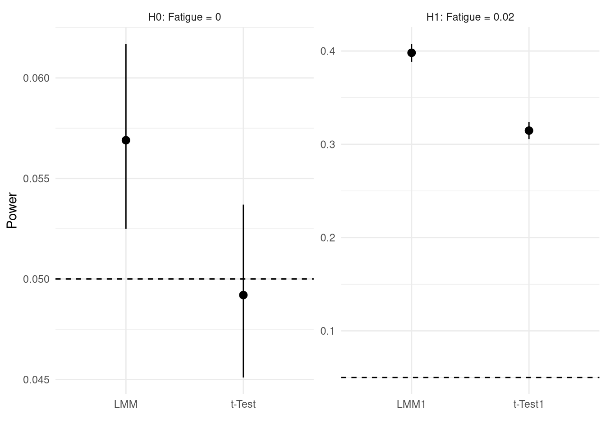

library(lmerTest)
library(simr)
data(sleepstudy)
S <- sleepstudyTechnical Details- Sleepstudy
- Finger Tapping
- Power Simulations
Sleepstudy
Reaction ~ Days
. . .

Model Illustration

Model Equation
fit <- lmer(Reaction ~ Days + (Days|Subject), S). . .
equatiomatic::extract_eq(fit)\[ \begin{aligned} \operatorname{Reaction}_{i} &\sim N \left(\alpha_{j[i]} + \beta_{1j[i]}(\operatorname{Days}), \sigma^2 \right) \\ \left( \begin{array}{c} \begin{aligned} &\alpha_{j} \\ &\beta_{1j} \end{aligned} \end{array} \right) &\sim N \left( \left( \begin{array}{c} \begin{aligned} &\mu_{\alpha_{j}} \\ &\mu_{\beta_{1j}} \end{aligned} \end{array} \right) , \left( \begin{array}{cc} \sigma^2_{\alpha_{j}} & \rho_{\alpha_{j}\beta_{1j}} \\ \rho_{\beta_{1j}\alpha_{j}} & \sigma^2_{\beta_{1j}} \end{array} \right) \right) \text{, for Subject j = 1,} \dots \text{,J} \end{aligned} \]
Test
LMM
coef(summary(fit))["Days", , drop=F] Estimate Std. Error df t value Pr(>|t|)
Days 10.47 1.546 17 6.771 3.264e-06. . .
Aggregate + t-Test
COEFS <- coef(lmList(Reaction ~ Days | Subject, S))
head(COEFS) (Intercept) Days
308 244.2 21.765
309 205.1 2.262
310 203.5 6.115
330 289.7 3.008
331 285.7 5.266
332 264.3 9.567. . .
t.test(COEFS$Days)$p.value[1] 3.264e-06Finger Tapping
Tap_Speed ~ Fatigued + Caffein + Physical_Activity + Time
. . .

LMM
D <- readRDS("./FingerTapping.rds")
anova(RSLP_fit <-
lmer(Tap_Speed_t0 ~
Fatigued + Caffein + Physical_Activity + Time +
(Fatigued + Caffein + Physical_Activity + Time || PersonID), D
))Type III Analysis of Variance Table with Satterthwaite's method
Sum Sq Mean Sq NumDF DenDF F value Pr(>F)
Fatigued 1.118 1.118 1 20.3 16.52 0.00059 ***
Caffein 0.710 0.710 1 16.7 10.48 0.00492 **
Physical_Activity 0.134 0.134 1 14.2 1.97 0.18150
Time 0.843 0.843 1 27.5 12.45 0.00149 **
---
Signif. codes: 0 '***' 0.001 '**' 0.01 '*' 0.05 '.' 0.1 ' ' 1Aggregate + t-Test
lmper person- Extract coefficients
- t-test
. . .
COEFS <- coef(lmList(Tap_Speed_t0 ~
Fatigued + Caffein + Physical_Activity + Time| PersonID, D))
head(COEFS) (Intercept) Fatigued Caffein Physical_Activity Time
1 5.537 -0.005006 0.11454 0.01294 0.010271
2 5.954 0.008884 0.06979 0.24502 -0.009993
4 6.089 -0.091132 0.24615 NA -0.006202
6 5.690 -0.002435 0.09211 NA -0.025624
7 6.197 -0.139987 NA NA 0.034949
8 6.288 -0.042551 NA 0.45775 0.010620. . .
t.test(COEFS$Fatigued)$p.value[1] 0.006832Comparison
LMM
- Challenging numerics
- Crossed random effects
aggregate + t-Test
- KISS
- Fewer assumptions
Type I Error & Power
Simulation Code
# Setup auxiliary functions
get_type1_CI <- function(P.vals){
C.int <- apply(P.vals < 0.05, 1, function(x)
prop.test(sum(x), length(x), p = 0.05)$conf.int |> round(4))
cbind(
`Power` = rowMeans(P.vals < 0.05),
lwr = C.int[1, ],
upr = C.int[2, ]
) |> as.data.frame()
}
get_p_vals <- function(Y){
D$Y <- Y
c(
LMM = lmer(Y ~
Fatigued + Caffein + Physical_Activity + Time +
(Fatigued + Caffein + Physical_Activity + Time || PersonID), D) |>
summary() |> coef() |> _["Fatigued", "Pr(>|t|)"],
`t-Test` = lmList(Y ~
Fatigued + Caffein + Physical_Activity + Time | PersonID, D
) |> coef() |> _$Fatigued |> t.test() |> _$p.value
)
}
# Simulate H0 ===========
xfun::cache_rds({
RSLP_fit <- lmer(Tap_Speed_t0 ~
Fatigued + Caffein + Physical_Activity + Time +
(Fatigued + Caffein + Physical_Activity + Time | PersonID), D
)
fixef(RSLP_fit) <- c(0,0,0,0,0)
simulate(
RSLP_fit,
nsim = 10000,
seed=123) |>
parallel::mclapply(get_p_vals)
},
file = "cache_sim3.1.rds",
dir = "cache/",
hash = list(D, as.character(body(get_p_vals)))
) |> simplify2array() |> get_type1_CI() -> H0_CI
# Simulate H1 ===========
xfun::cache_rds({
RSLP_fit <- lmer(Tap_Speed_t0 ~
Fatigued + Caffein + Physical_Activity + Time +
(Fatigued + Caffein + Physical_Activity + Time | PersonID), D
)
fixef(RSLP_fit) <- c(0,0.02,0,0,0)
simulate(
RSLP_fit,
nsim = 10000,
seed=123) |>
parallel::mclapply(get_p_vals)
},
file = "cache_sim3.2.rds",
dir = "cache/",
hash = list(D, as.character(body(get_p_vals)))
) |> simplify2array() |> get_type1_CI() -> H1_CI
# Plot results ============
H0_CI$Hypothesis <- "H0: Fatigue = 0"
H1_CI$Hypothesis <- "H1: Fatigue = 0.02"
H_all <- rbind(H0_CI, H1_CI)
H_all$test <- rownames(H_all)
ggplot(H_all, aes(x = test, y = `Power`, ymin = lwr, ymax = upr)) +
geom_pointrange() +
geom_hline(yintercept = 0.05, linetype = 2) +
facet_wrap(~Hypothesis, scales = "free") +
theme_minimal() +
xlab("")
Power-Simulations
Using simr
powerSim(RSLP_fit). . .
powerCurve(RSLP_fit, along = "PersonID") |> plot()Simulating: | |Simulating: |= |Simulating: |== |Simulating: |=== |Simulating: |==== |Simulating: |===== |Simulating: |====== |Simulating: |======= |Simulating: |======== |Simulating: |========= |Simulating: |========== |Simulating: |=========== |Simulating: |============ |Simulating: |============= |Simulating: |============== |Simulating: |=============== |Simulating: |================ |Simulating: |================= |Simulating: |================== |Simulating: |=================== |Simulating: |==================== |Simulating: |===================== |Simulating: |====================== |Simulating: |======================= |Simulating: |======================== |Simulating: |========================= |Simulating: |========================== |Simulating: |=========================== |Simulating: |============================ |Simulating: |============================= |Simulating: |============================== |Simulating: |=============================== |Simulating: |================================ |Simulating: |================================= |Simulating: |================================== |Simulating: |=================================== |Simulating: |==================================== |Simulating: |===================================== |Simulating: |====================================== |Simulating: |======================================= |Simulating: |======================================== |Simulating: |========================================= |Simulating: |========================================== |Simulating: |=========================================== |Simulating: |============================================ |Simulating: |============================================= |Simulating: |============================================== |Simulating: |=============================================== |Simulating: |================================================ |Simulating: |================================================= |Simulating: |================================================== |Simulating: |=================================================== |Simulating: |==================================================== |Simulating: |===================================================== |Simulating: |====================================================== |Simulating: |======================================================= |Simulating: |======================================================== |Simulating: |========================================================= |Simulating: |========================================================== |Simulating: |=========================================================== |Simulating: |============================================================ |Simulating: |============================================================= |Simulating: |============================================================== |Simulating: |=============================================================== |Simulating: |================================================================ |Simulating: |================================================================= |Simulating: |==================================================================|( 1/10) ( 1/10) Simulating: | |( 1/10) Simulating: |= |( 1/10) Simulating: |== |( 1/10) Simulating: |=== |( 1/10) Simulating: |==== |( 1/10) Simulating: |===== |( 1/10) Simulating: |====== |( 1/10) Simulating: |======= |( 1/10) Simulating: |======== |( 1/10) Simulating: |========= |( 1/10) Simulating: |========== |( 1/10) Simulating: |=========== |( 1/10) Simulating: |============ |( 1/10) Simulating: |============= |( 1/10) Simulating: |============== |( 1/10) Simulating: |=============== |( 1/10) Simulating: |================ |( 1/10) Simulating: |================= |( 1/10) Simulating: |================== |( 1/10) Simulating: |=================== |( 1/10) Simulating: |==================== |( 1/10) Simulating: |===================== |( 1/10) Simulating: |====================== |( 1/10) Simulating: |======================= |( 1/10) Simulating: |======================== |( 1/10) Simulating: |========================= |( 1/10) Simulating: |========================== |( 1/10) Simulating: |=========================== |( 1/10) Simulating: |============================ |( 1/10) Simulating: |============================= |( 1/10) Simulating: |============================== |( 1/10) Simulating: |=============================== |( 1/10) Simulating: |================================ |( 1/10) Simulating: |================================= |( 1/10) Simulating: |================================== |( 1/10) Simulating: |=================================== |( 1/10) Simulating: |==================================== |( 1/10) Simulating: |===================================== |( 1/10) Simulating: |====================================== |( 1/10) Simulating: |======================================= |( 1/10) Simulating: |======================================== |( 1/10) Simulating: |========================================= |( 1/10) Simulating: |========================================== |( 1/10) Simulating: |=========================================== |( 1/10) Simulating: |============================================ |( 1/10) Simulating: |============================================= |( 1/10) Simulating: |============================================== |( 1/10) Simulating: |=============================================== |( 1/10) Simulating: |================================================ |( 1/10) Simulating: |================================================= |( 1/10) Simulating: |================================================== |( 1/10) Simulating: |=================================================== |( 1/10) Simulating: |==================================================== |( 1/10) Simulating: |===================================================== |( 1/10) Simulating: |====================================================== |( 1/10) Simulating: |======================================================= |( 1/10) Simulating: |======================================================== |( 1/10) Simulating: |========================================================= |( 1/10) Simulating: |==========================================================|( 1/10) ( 2/10) ( 2/10) Simulating: | |( 2/10) Simulating: |= |( 2/10) Simulating: |== |( 2/10) Simulating: |=== |( 2/10) Simulating: |==== |( 2/10) Simulating: |===== |( 2/10) Simulating: |====== |( 2/10) Simulating: |======= |( 2/10) Simulating: |======== |( 2/10) Simulating: |========= |( 2/10) Simulating: |========== |( 2/10) Simulating: |=========== |( 2/10) Simulating: |============ |( 2/10) Simulating: |============= |( 2/10) Simulating: |============== |( 2/10) Simulating: |=============== |( 2/10) Simulating: |================ |( 2/10) Simulating: |================= |( 2/10) Simulating: |================== |( 2/10) Simulating: |=================== |( 2/10) Simulating: |==================== |( 2/10) Simulating: |===================== |( 2/10) Simulating: |====================== |( 2/10) Simulating: |======================= |( 2/10) Simulating: |======================== |( 2/10) Simulating: |========================= |( 2/10) Simulating: |========================== |( 2/10) Simulating: |=========================== |( 2/10) Simulating: |============================ |( 2/10) Simulating: |============================= |( 2/10) Simulating: |============================== |( 2/10) Simulating: |=============================== |( 2/10) Simulating: |================================ |( 2/10) Simulating: |================================= |( 2/10) Simulating: |================================== |( 2/10) Simulating: |=================================== |( 2/10) Simulating: |==================================== |( 2/10) Simulating: |===================================== |( 2/10) Simulating: |====================================== |( 2/10) Simulating: |======================================= |( 2/10) Simulating: |======================================== |( 2/10) Simulating: |========================================= |( 2/10) Simulating: |========================================== |( 2/10) Simulating: |=========================================== |( 2/10) Simulating: |============================================ |( 2/10) Simulating: |============================================= |( 2/10) Simulating: |============================================== |( 2/10) Simulating: |=============================================== |( 2/10) Simulating: |================================================ |( 2/10) Simulating: |================================================= |( 2/10) Simulating: |================================================== |( 2/10) Simulating: |=================================================== |( 2/10) Simulating: |==================================================== |( 2/10) Simulating: |===================================================== |( 2/10) Simulating: |====================================================== |( 2/10) Simulating: |======================================================= |( 2/10) Simulating: |======================================================== |( 2/10) Simulating: |========================================================= |( 2/10) Simulating: |==========================================================|( 2/10) ( 3/10) ( 3/10) Simulating: | |( 3/10) Simulating: |= |( 3/10) Simulating: |== |( 3/10) Simulating: |=== |( 3/10) Simulating: |==== |( 3/10) Simulating: |===== |( 3/10) Simulating: |====== |( 3/10) Simulating: |======= |( 3/10) Simulating: |======== |( 3/10) Simulating: |========= |( 3/10) Simulating: |========== |( 3/10) Simulating: |=========== |( 3/10) Simulating: |============ |( 3/10) Simulating: |============= |( 3/10) Simulating: |============== |( 3/10) Simulating: |=============== |( 3/10) Simulating: |================ |( 3/10) Simulating: |================= |( 3/10) Simulating: |================== |( 3/10) Simulating: |=================== |( 3/10) Simulating: |==================== |( 3/10) Simulating: |===================== |( 3/10) Simulating: |====================== |( 3/10) Simulating: |======================= |( 3/10) Simulating: |======================== |( 3/10) Simulating: |========================= |( 3/10) Simulating: |========================== |( 3/10) Simulating: |=========================== |( 3/10) Simulating: |============================ |( 3/10) Simulating: |============================= |( 3/10) Simulating: |============================== |( 3/10) Simulating: |=============================== |( 3/10) Simulating: |================================ |( 3/10) Simulating: |================================= |( 3/10) Simulating: |================================== |( 3/10) Simulating: |=================================== |( 3/10) Simulating: |==================================== |( 3/10) Simulating: |===================================== |( 3/10) Simulating: |====================================== |( 3/10) Simulating: |======================================= |( 3/10) Simulating: |======================================== |( 3/10) Simulating: |========================================= |( 3/10) Simulating: |========================================== |( 3/10) Simulating: |=========================================== |( 3/10) Simulating: |============================================ |( 3/10) Simulating: |============================================= |( 3/10) Simulating: |============================================== |( 3/10) Simulating: |=============================================== |( 3/10) Simulating: |================================================ |( 3/10) Simulating: |================================================= |( 3/10) Simulating: |================================================== |( 3/10) Simulating: |=================================================== |( 3/10) Simulating: |==================================================== |( 3/10) Simulating: |===================================================== |( 3/10) Simulating: |====================================================== |( 3/10) Simulating: |======================================================= |( 3/10) Simulating: |======================================================== |( 3/10) Simulating: |========================================================= |( 3/10) Simulating: |==========================================================|( 3/10) ( 4/10) ( 4/10) Simulating: | |( 4/10) Simulating: |= |( 4/10) Simulating: |== |( 4/10) Simulating: |=== |( 4/10) Simulating: |==== |( 4/10) Simulating: |===== |( 4/10) Simulating: |====== |( 4/10) Simulating: |======= |( 4/10) Simulating: |======== |( 4/10) Simulating: |========= |( 4/10) Simulating: |========== |( 4/10) Simulating: |=========== |( 4/10) Simulating: |============ |( 4/10) Simulating: |============= |( 4/10) Simulating: |============== |( 4/10) Simulating: |=============== |( 4/10) Simulating: |================ |( 4/10) Simulating: |================= |( 4/10) Simulating: |================== |( 4/10) Simulating: |=================== |( 4/10) Simulating: |==================== |( 4/10) Simulating: |===================== |( 4/10) Simulating: |====================== |( 4/10) Simulating: |======================= |( 4/10) Simulating: |======================== |( 4/10) Simulating: |========================= |( 4/10) Simulating: |========================== |( 4/10) Simulating: |=========================== |( 4/10) Simulating: |============================ |( 4/10) Simulating: |============================= |( 4/10) Simulating: |============================== |( 4/10) Simulating: |=============================== |( 4/10) Simulating: |================================ |( 4/10) Simulating: |================================= |( 4/10) Simulating: |================================== |( 4/10) Simulating: |=================================== |( 4/10) Simulating: |==================================== |( 4/10) Simulating: |===================================== |( 4/10) Simulating: |====================================== |( 4/10) Simulating: |======================================= |( 4/10) Simulating: |======================================== |( 4/10) Simulating: |========================================= |( 4/10) Simulating: |========================================== |( 4/10) Simulating: |=========================================== |( 4/10) Simulating: |============================================ |( 4/10) Simulating: |============================================= |( 4/10) Simulating: |============================================== |( 4/10) Simulating: |=============================================== |( 4/10) Simulating: |================================================ |( 4/10) Simulating: |================================================= |( 4/10) Simulating: |================================================== |( 4/10) Simulating: |=================================================== |( 4/10) Simulating: |==================================================== |( 4/10) Simulating: |===================================================== |( 4/10) Simulating: |====================================================== |( 4/10) Simulating: |======================================================= |( 4/10) Simulating: |======================================================== |( 4/10) Simulating: |========================================================= |( 4/10) Simulating: |==========================================================|( 4/10) ( 5/10) ( 5/10) Simulating: | |( 5/10) Simulating: |= |( 5/10) Simulating: |== |( 5/10) Simulating: |=== |( 5/10) Simulating: |==== |( 5/10) Simulating: |===== |( 5/10) Simulating: |====== |( 5/10) Simulating: |======= |( 5/10) Simulating: |======== |( 5/10) Simulating: |========= |( 5/10) Simulating: |========== |( 5/10) Simulating: |=========== |( 5/10) Simulating: |============ |( 5/10) Simulating: |============= |( 5/10) Simulating: |============== |( 5/10) Simulating: |=============== |( 5/10) Simulating: |================ |( 5/10) Simulating: |================= |( 5/10) Simulating: |================== |( 5/10) Simulating: |=================== |( 5/10) Simulating: |==================== |( 5/10) Simulating: |===================== |( 5/10) Simulating: |====================== |( 5/10) Simulating: |======================= |( 5/10) Simulating: |======================== |( 5/10) Simulating: |========================= |( 5/10) Simulating: |========================== |( 5/10) Simulating: |=========================== |( 5/10) Simulating: |============================ |( 5/10) Simulating: |============================= |( 5/10) Simulating: |============================== |( 5/10) Simulating: |=============================== |( 5/10) Simulating: |================================ |( 5/10) Simulating: |================================= |( 5/10) Simulating: |================================== |( 5/10) Simulating: |=================================== |( 5/10) Simulating: |==================================== |( 5/10) Simulating: |===================================== |( 5/10) Simulating: |====================================== |( 5/10) Simulating: |======================================= |( 5/10) Simulating: |======================================== |( 5/10) Simulating: |========================================= |( 5/10) Simulating: |========================================== |( 5/10) Simulating: |=========================================== |( 5/10) Simulating: |============================================ |( 5/10) Simulating: |============================================= |( 5/10) Simulating: |============================================== |( 5/10) Simulating: |=============================================== |( 5/10) Simulating: |================================================ |( 5/10) Simulating: |================================================= |( 5/10) Simulating: |================================================== |( 5/10) Simulating: |=================================================== |( 5/10) Simulating: |==================================================== |( 5/10) Simulating: |===================================================== |( 5/10) Simulating: |====================================================== |( 5/10) Simulating: |======================================================= |( 5/10) Simulating: |======================================================== |( 5/10) Simulating: |========================================================= |( 5/10) Simulating: |==========================================================|( 5/10) ( 6/10) ( 6/10) Simulating: | |( 6/10) Simulating: |= |( 6/10) Simulating: |== |( 6/10) Simulating: |=== |( 6/10) Simulating: |==== |( 6/10) Simulating: |===== |( 6/10) Simulating: |====== |( 6/10) Simulating: |======= |( 6/10) Simulating: |======== |( 6/10) Simulating: |========= |( 6/10) Simulating: |========== |( 6/10) Simulating: |=========== |( 6/10) Simulating: |============ |( 6/10) Simulating: |============= |( 6/10) Simulating: |============== |( 6/10) Simulating: |=============== |( 6/10) Simulating: |================ |( 6/10) Simulating: |================= |( 6/10) Simulating: |================== |( 6/10) Simulating: |=================== |( 6/10) Simulating: |==================== |( 6/10) Simulating: |===================== |( 6/10) Simulating: |====================== |( 6/10) Simulating: |======================= |( 6/10) Simulating: |======================== |( 6/10) Simulating: |========================= |( 6/10) Simulating: |========================== |( 6/10) Simulating: |=========================== |( 6/10) Simulating: |============================ |( 6/10) Simulating: |============================= |( 6/10) Simulating: |============================== |( 6/10) Simulating: |=============================== |( 6/10) Simulating: |================================ |( 6/10) Simulating: |================================= |( 6/10) Simulating: |================================== |( 6/10) Simulating: |=================================== |( 6/10) Simulating: |==================================== |( 6/10) Simulating: |===================================== |( 6/10) Simulating: |====================================== |( 6/10) Simulating: |======================================= |( 6/10) Simulating: |======================================== |( 6/10) Simulating: |========================================= |( 6/10) Simulating: |========================================== |( 6/10) Simulating: |=========================================== |( 6/10) Simulating: |============================================ |( 6/10) Simulating: |============================================= |( 6/10) Simulating: |============================================== |( 6/10) Simulating: |=============================================== |( 6/10) Simulating: |================================================ |( 6/10) Simulating: |================================================= |( 6/10) Simulating: |================================================== |( 6/10) Simulating: |=================================================== |( 6/10) Simulating: |==================================================== |( 6/10) Simulating: |===================================================== |( 6/10) Simulating: |====================================================== |( 6/10) Simulating: |======================================================= |( 6/10) Simulating: |======================================================== |( 6/10) Simulating: |========================================================= |( 6/10) Simulating: |==========================================================|( 6/10) ( 7/10) ( 7/10) Simulating: | |( 7/10) Simulating: |= |( 7/10) Simulating: |== |( 7/10) Simulating: |=== |( 7/10) Simulating: |==== |( 7/10) Simulating: |===== |( 7/10) Simulating: |====== |( 7/10) Simulating: |======= |( 7/10) Simulating: |======== |( 7/10) Simulating: |========= |( 7/10) Simulating: |========== |( 7/10) Simulating: |=========== |( 7/10) Simulating: |============ |( 7/10) Simulating: |============= |( 7/10) Simulating: |============== |( 7/10) Simulating: |=============== |( 7/10) Simulating: |================ |( 7/10) Simulating: |================= |( 7/10) Simulating: |================== |( 7/10) Simulating: |=================== |( 7/10) Simulating: |==================== |( 7/10) Simulating: |===================== |( 7/10) Simulating: |====================== |( 7/10) Simulating: |======================= |( 7/10) Simulating: |======================== |( 7/10) Simulating: |========================= |( 7/10) Simulating: |========================== |( 7/10) Simulating: |=========================== |( 7/10) Simulating: |============================ |( 7/10) Simulating: |============================= |( 7/10) Simulating: |============================== |( 7/10) Simulating: |=============================== |( 7/10) Simulating: |================================ |( 7/10) Simulating: |================================= |( 7/10) Simulating: |================================== |( 7/10) Simulating: |=================================== |( 7/10) Simulating: |==================================== |( 7/10) Simulating: |===================================== |( 7/10) Simulating: |====================================== |( 7/10) Simulating: |======================================= |( 7/10) Simulating: |======================================== |( 7/10) Simulating: |========================================= |( 7/10) Simulating: |========================================== |( 7/10) Simulating: |=========================================== |( 7/10) Simulating: |============================================ |( 7/10) Simulating: |============================================= |( 7/10) Simulating: |============================================== |( 7/10) Simulating: |=============================================== |( 7/10) Simulating: |================================================ |( 7/10) Simulating: |================================================= |( 7/10) Simulating: |================================================== |( 7/10) Simulating: |=================================================== |( 7/10) Simulating: |==================================================== |( 7/10) Simulating: |===================================================== |( 7/10) Simulating: |====================================================== |( 7/10) Simulating: |======================================================= |( 7/10) Simulating: |======================================================== |( 7/10) Simulating: |========================================================= |( 7/10) Simulating: |==========================================================|( 7/10) ( 8/10) ( 8/10) Simulating: | |( 8/10) Simulating: |= |( 8/10) Simulating: |== |( 8/10) Simulating: |=== |( 8/10) Simulating: |==== |( 8/10) Simulating: |===== |( 8/10) Simulating: |====== |( 8/10) Simulating: |======= |( 8/10) Simulating: |======== |( 8/10) Simulating: |========= |( 8/10) Simulating: |========== |( 8/10) Simulating: |=========== |( 8/10) Simulating: |============ |( 8/10) Simulating: |============= |( 8/10) Simulating: |============== |( 8/10) Simulating: |=============== |( 8/10) Simulating: |================ |( 8/10) Simulating: |================= |( 8/10) Simulating: |================== |( 8/10) Simulating: |=================== |( 8/10) Simulating: |==================== |( 8/10) Simulating: |===================== |( 8/10) Simulating: |====================== |( 8/10) Simulating: |======================= |( 8/10) Simulating: |======================== |( 8/10) Simulating: |========================= |( 8/10) Simulating: |========================== |( 8/10) Simulating: |=========================== |( 8/10) Simulating: |============================ |( 8/10) Simulating: |============================= |( 8/10) Simulating: |============================== |( 8/10) Simulating: |=============================== |( 8/10) Simulating: |================================ |( 8/10) Simulating: |================================= |( 8/10) Simulating: |================================== |( 8/10) Simulating: |=================================== |( 8/10) Simulating: |==================================== |( 8/10) Simulating: |===================================== |( 8/10) Simulating: |====================================== |( 8/10) Simulating: |======================================= |( 8/10) Simulating: |======================================== |( 8/10) Simulating: |========================================= |( 8/10) Simulating: |========================================== |( 8/10) Simulating: |=========================================== |( 8/10) Simulating: |============================================ |( 8/10) Simulating: |============================================= |( 8/10) Simulating: |============================================== |( 8/10) Simulating: |=============================================== |( 8/10) Simulating: |================================================ |( 8/10) Simulating: |================================================= |( 8/10) Simulating: |================================================== |( 8/10) Simulating: |=================================================== |( 8/10) Simulating: |==================================================== |( 8/10) Simulating: |===================================================== |( 8/10) Simulating: |====================================================== |( 8/10) Simulating: |======================================================= |( 8/10) Simulating: |======================================================== |( 8/10) Simulating: |========================================================= |( 8/10) Simulating: |==========================================================|( 8/10) ( 9/10) ( 9/10) Simulating: | |( 9/10) Simulating: |= |( 9/10) Simulating: |== |( 9/10) Simulating: |=== |( 9/10) Simulating: |==== |( 9/10) Simulating: |===== |( 9/10) Simulating: |====== |( 9/10) Simulating: |======= |( 9/10) Simulating: |======== |( 9/10) Simulating: |========= |( 9/10) Simulating: |========== |( 9/10) Simulating: |=========== |( 9/10) Simulating: |============ |( 9/10) Simulating: |============= |( 9/10) Simulating: |============== |( 9/10) Simulating: |=============== |( 9/10) Simulating: |================ |( 9/10) Simulating: |================= |( 9/10) Simulating: |================== |( 9/10) Simulating: |=================== |( 9/10) Simulating: |==================== |( 9/10) Simulating: |===================== |( 9/10) Simulating: |====================== |( 9/10) Simulating: |======================= |( 9/10) Simulating: |======================== |( 9/10) Simulating: |========================= |( 9/10) Simulating: |========================== |( 9/10) Simulating: |=========================== |( 9/10) Simulating: |============================ |( 9/10) Simulating: |============================= |( 9/10) Simulating: |============================== |( 9/10) Simulating: |=============================== |( 9/10) Simulating: |================================ |( 9/10) Simulating: |================================= |( 9/10) Simulating: |================================== |( 9/10) Simulating: |=================================== |( 9/10) Simulating: |==================================== |( 9/10) Simulating: |===================================== |( 9/10) Simulating: |====================================== |( 9/10) Simulating: |======================================= |( 9/10) Simulating: |======================================== |( 9/10) Simulating: |========================================= |( 9/10) Simulating: |========================================== |( 9/10) Simulating: |=========================================== |( 9/10) Simulating: |============================================ |( 9/10) Simulating: |============================================= |( 9/10) Simulating: |============================================== |( 9/10) Simulating: |=============================================== |( 9/10) Simulating: |================================================ |( 9/10) Simulating: |================================================= |( 9/10) Simulating: |================================================== |( 9/10) Simulating: |=================================================== |( 9/10) Simulating: |==================================================== |( 9/10) Simulating: |===================================================== |( 9/10) Simulating: |====================================================== |( 9/10) Simulating: |======================================================= |( 9/10) Simulating: |======================================================== |( 9/10) Simulating: |========================================================= |( 9/10) Simulating: |==========================================================|( 9/10) (10/10) (10/10) Simulating: | |(10/10) Simulating: |= |(10/10) Simulating: |== |(10/10) Simulating: |=== |(10/10) Simulating: |==== |(10/10) Simulating: |===== |(10/10) Simulating: |====== |(10/10) Simulating: |======= |(10/10) Simulating: |======== |(10/10) Simulating: |========= |(10/10) Simulating: |========== |(10/10) Simulating: |=========== |(10/10) Simulating: |============ |(10/10) Simulating: |============= |(10/10) Simulating: |============== |(10/10) Simulating: |=============== |(10/10) Simulating: |================ |(10/10) Simulating: |================= |(10/10) Simulating: |================== |(10/10) Simulating: |=================== |(10/10) Simulating: |==================== |(10/10) Simulating: |===================== |(10/10) Simulating: |====================== |(10/10) Simulating: |======================= |(10/10) Simulating: |======================== |(10/10) Simulating: |========================= |(10/10) Simulating: |========================== |(10/10) Simulating: |=========================== |(10/10) Simulating: |============================ |(10/10) Simulating: |============================= |(10/10) Simulating: |============================== |(10/10) Simulating: |=============================== |(10/10) Simulating: |================================ |(10/10) Simulating: |================================= |(10/10) Simulating: |================================== |(10/10) Simulating: |=================================== |(10/10) Simulating: |==================================== |(10/10) Simulating: |===================================== |(10/10) Simulating: |====================================== |(10/10) Simulating: |======================================= |(10/10) Simulating: |======================================== |(10/10) Simulating: |========================================= |(10/10) Simulating: |========================================== |(10/10) Simulating: |=========================================== |(10/10) Simulating: |============================================ |(10/10) Simulating: |============================================= |(10/10) Simulating: |============================================== |(10/10) Simulating: |=============================================== |(10/10) Simulating: |================================================ |(10/10) Simulating: |================================================= |(10/10) Simulating: |================================================== |(10/10) Simulating: |=================================================== |(10/10) Simulating: |==================================================== |(10/10) Simulating: |===================================================== |(10/10) Simulating: |====================================================== |(10/10) Simulating: |======================================================= |(10/10) Simulating: |======================================================== |(10/10) Simulating: |========================================================= |(10/10) Simulating: |==========================================================|(10/10) 
Simulate with rnorm() & co.

lme4::simulate.merMod
- Existing model
- Modify existing model (
simr)
. . .
fixef<-coef<-VarCorr<-sigma<-scale<-
. . .
fixef(RSLP_fit) <- c(0,0,0,0,0)
simulate(RSLP_fit, nsim = 100)No existing model?
simulate(Y ~ ..., newparams = list(theta = ???, ...))1
. . .
simr::makeLmer(
Y ~ Fatigued + Caffein + Physical_Activity + Time +
(Fatigued + Caffein + Physical_Activity + Time | PersonID),
fixef = c(0,0,0,0,0),
VarCorr = diag(5),
data = D,
sigma = 1
)Linear mixed model fit by REML ['lmerMod']
Formula: Y ~ Fatigued + Caffein + Physical_Activity + Time + (Fatigued +
Caffein + Physical_Activity + Time | PersonID)
Data: D
REML criterion at convergence: 2033
Random effects:
Groups Name Std.Dev. Corr
PersonID (Intercept) 1
Fatigued 1 0.00
Caffein 1 0.00 0.00
Physical_Activity 1 0.00 0.00 0.00
Time 1 0.00 0.00 0.00 0.00
Residual 1
Number of obs: 567, groups: PersonID, 27
Fixed Effects:
(Intercept) Fatigued Caffein Physical_Activity
0 0 0 0
Time
0 Caching: xfun::cache_rds
xfun::cache_rds({
expression
},
hash = list_with_relevant_objects
)Have Fun Simulating!
- Aggregate per Subject \(\rightarrow\) t-Test
equatiomatic::extract_eq()lme4::simulate.merMod()fixef<-& co.simr::makeLmer()
xfun::cache_rds()
Footnotes
theta: cholesky factor of the normalized random effects covariance matrix.↩︎